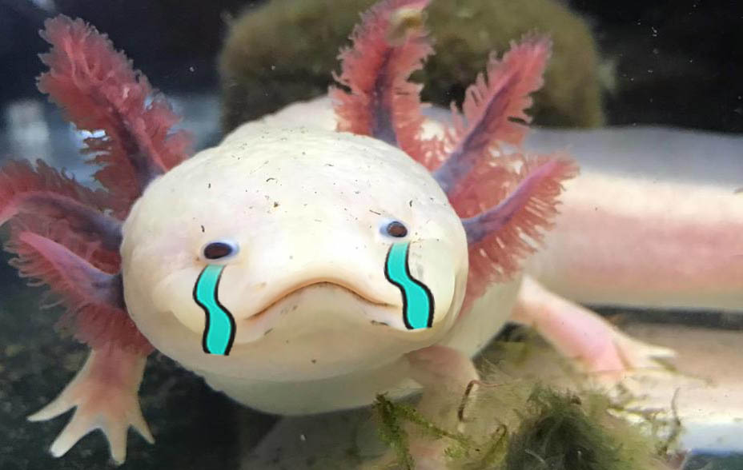

</head>
<body class="dark_mode">
<a id="skipNav" class="hide" href="#full_content">Vai al contenuto</a>
<div id="full_header">
	<a id="full_title" href="../php/index.php" xml:lang="en" lang="en">Axolotl Society</a>
	<div class="switch">
		<input type="checkbox" id="theme_switch" onclick="toggle_dark()"/>
		<label class="slider" for="theme_switch">Cambia tema</label>
	</div>
	<script src="../js/script.js"></script>
	<script> check_theme(); </script>
</div>

<main id="full_content">
	<h1>Ops! Non siamo riusciti a trovare quello che stavi cercando...</h1>  
	<p>
		Questa pagina ha perso la coda! Vuoi farla ricrescere? 
		<a href="index.php">Torna alla <span xml:lang="en" lang="en">home</span></a>
	</p> 
	
